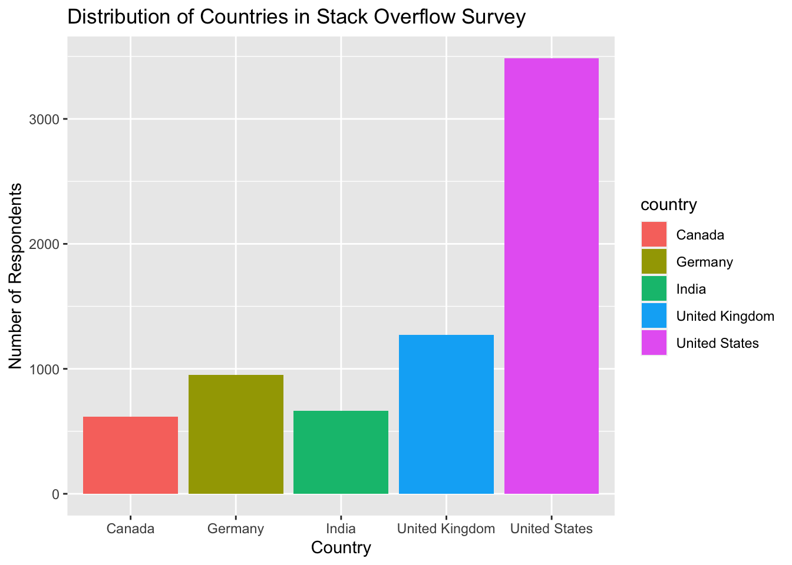

Attaching package: 'dplyr'The following objects are masked from 'package:stats':
filter, lagThe following objects are masked from 'package:base':
intersect, setdiff, setequal, unionStack Overflow is the world’s largest, most trusted online community for developers (I bet you have used it!) and every year there is a large survey of developers, to learn about developers’ opinions on different technologies, work habits, and so forth. You can find the link to the surveys here:
In this case study, you will predict whether a developer works remotely or not (i.e., in their company offices) from characteristics of these developers, like experience and size of the company. In this analysis, we will assume that a software developer can either work remotely, or not. What kind of model will you build?
Load the libraries:
Attaching package: 'dplyr'The following objects are masked from 'package:stats':
filter, lagThe following objects are masked from 'package:base':
intersect, setdiff, setequal, unionLoad the data:
Start off this modeling analysis by checking out how many remote and non-remote developers you have to work with, where they live, and how much experience they have:
# Take a look at StackSurvey
glimpse(StackSurvey)Rows: 6,991
Columns: 22
$ respondent <dbl> 3, 15, 18, 19, 26, 55, 62, 71, 73…
$ country <chr> "United Kingdom", "United Kingdom…
$ salary <dbl> 113750.000, 100000.000, 130000.00…
$ years_coded_job <dbl> 20, 20, 20, 3, 16, 4, 1, 1, 20, 2…
$ open_source <lgl> TRUE, FALSE, TRUE, FALSE, FALSE, …
$ hobby <lgl> TRUE, TRUE, TRUE, TRUE, TRUE, FAL…
$ company_size_number <dbl> 10000, 5000, 1000, 10000, 10000, …
$ remote <chr> "Not remote", "Remote", "Remote",…
$ career_satisfaction <dbl> 8, 8, 9, 5, 7, 9, 5, 8, 8, 10, 7,…
$ data_scientist <lgl> FALSE, FALSE, FALSE, FALSE, FALSE…
$ database_administrator <lgl> FALSE, FALSE, FALSE, FALSE, FALSE…
$ desktop_applications_developer <lgl> FALSE, FALSE, FALSE, FALSE, FALSE…
$ developer_with_stats_math_background <lgl> FALSE, FALSE, FALSE, FALSE, FALSE…
$ dev_ops <lgl> FALSE, FALSE, TRUE, FALSE, FALSE,…
$ embedded_developer <lgl> FALSE, TRUE, TRUE, FALSE, FALSE, …
$ graphic_designer <lgl> FALSE, FALSE, FALSE, FALSE, FALSE…
$ graphics_programming <lgl> FALSE, FALSE, FALSE, FALSE, FALSE…
$ machine_learning_specialist <lgl> FALSE, FALSE, FALSE, FALSE, FALSE…
$ mobile_developer <lgl> FALSE, FALSE, FALSE, FALSE, FALSE…
$ quality_assurance_engineer <lgl> FALSE, FALSE, TRUE, FALSE, FALSE,…
$ systems_administrator <lgl> FALSE, FALSE, FALSE, FALSE, FALSE…
$ web_developer <lgl> FALSE, FALSE, TRUE, TRUE, TRUE, T…# A tibble: 2 × 2
remote n
<chr> <int>
1 Not remote 6273
2 Remote 718# A tibble: 5 × 2
country n
<chr> <int>
1 United States 3486
2 United Kingdom 1270
3 Germany 950
4 India 666
5 Canada 619Use the appropriate column from the data set so you can plot a boxplot with remote status on the x-axis and professional experience on the y-axis:
ggplot(StackSurvey, aes(remote, years_coded_job)) +
geom_boxplot() +
labs(x = NULL,
y = "Years of professional coding experience")